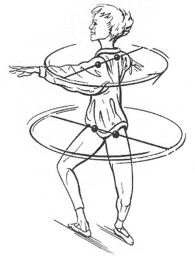

Back
Alexander Manning
-
Go into passe and feel your tail bone FULLY scooping under
-
Go into passe and feel your tail bone FULLY scooping under
-
push the knee back in your preparation to build a solid foundation for pirouettes.
Ashley Ivory
-
Don't lift from your hip to go to passe, feel hamstring bending knee to get it into position so you don't tild your bips
Darla Hoover
-
Feel heel shoot back as if you're landing in a tendu rather than not connecting to ground fully and lifting hip to come down
-
For step overs, make the leg vertical, when the leg comes in it comes in straight and directly under, think "make it vertical" in the turn
-
Feel toes in the 5th almost wining back, once you get the feeling you won't want to cheat out of your 5th
-
90% of your weight is on the ball of your foot, and the other 10% is just there for your big toe to shoot out and get the winging sensation so your knee can press back and propel you in the turn
Braeden Hart
-
A high passe is also crucial to being able to sustain a piroutte position. When
combined with the above correction regarding dropping the pelvis, one is able to
create a stable position that can act as an axis for you to turn on. When you drop
your passe and it isn't held high, it lowers your center of gravity making it harder
to turn. Keep this in mind along with the correction to push the knee back in your
preparation to build a solid foundation for pirouettes.
